FPV Feed docs
Everything you need to turn a Blender scene or video into FPV drone footage: install, the first shot in five minutes, every panel, the OSD, flight data, rendering and fixes. In Blender the add-on is listed as FPV Camera FX & Telemetry HUD and lives in the FPV sidebar tab.
Install, update, remove
- Download
fpv_toolkit-1.5.0.zipfrom your Superhive downloads. Don't unzip it. - In Blender open Edit › Preferences › Get Extensions, open the small arrow menu at the top right and choose Install from Disk…, then pick the zip. Dragging the zip onto the Blender window works too.
- The add-on is enabled straight away. In the 3D Viewport press N and open the FPV tab.
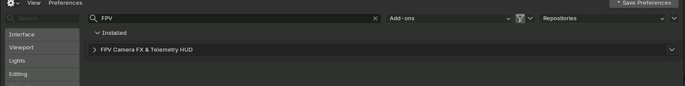
Command line, for example on a render node: blender --command extension install-file -r user_default -e fpv_toolkit-1.5.0.zip. The only permission the add-on asks for is files, to read and write look presets.
Your first FPV shot in 5 minutes
The Getting Started checklist at the top of the FPV tab walks you through these steps and ticks each one off. The next unfinished step always shows its button.
- Build. Press Build FPV Toolkit. This creates the effect graph, the OSD and a test chart. A compositor the scene already had is kept and can be restored.
- Choose a source. Render uses your 3D scene, File… a video, image or numbered image sequence, Chart the test chart.
- Pick a look, for example Mild Analog Warmup, and press Apply.
- Set the intensity. Drag Intensity (0 = clean picture).
- Choose a HUD layout, for example Betaflight OSD, and press Apply.
- Preview renders the current frame.
- Render. Press MP4 Output, then Render for the whole frame range.
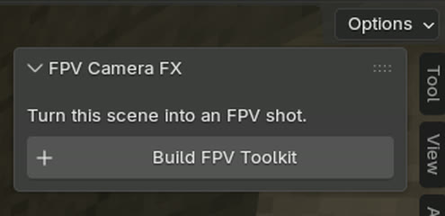
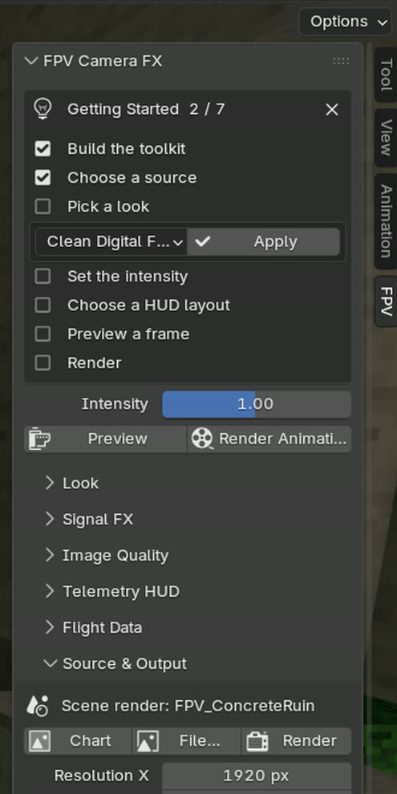
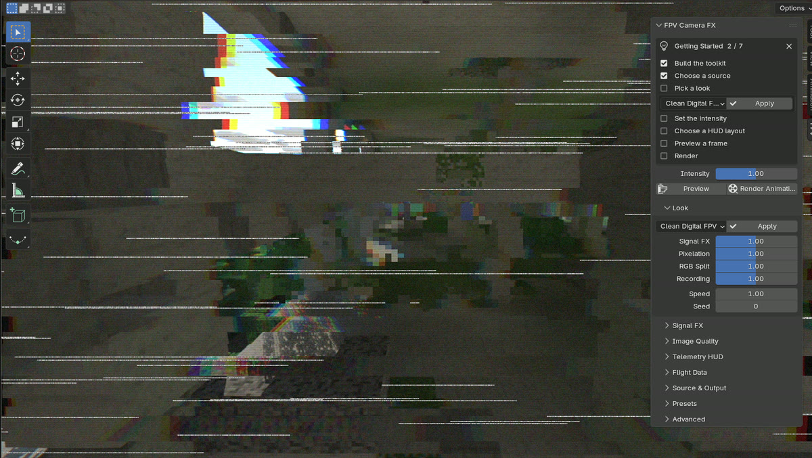
How it works
Two scenes
Your scene runs through the compositor group FPV_Compositor, which adds the effects. The OSD lives in a second scene, FPV_HUD, rendered automatically and placed on top. You never render it yourself.
One setup per file
Pressing Build in another scene offers Move Setup Here; the first scene then gets its own compositor back.
A readable node graph
Nodes sit in labelled frames: Source, Coordinates, Signal FX, Lens & Colour Split, Sampler, Recording, HUD and Output. Move them freely; Rebuild Node Groups tidies everything again.
Effect strength
Base strength × category slider × Intensity. Lens distortion is the exception, because it changes framing. An effect at 0 is removed from the graph and costs no render time.
Repeatable
Same frame and same seed give the same image on every render. Change Seed for a different, still repeatable variation.
Any resolution
Sizes are relative to the image height, so a look made at 720p looks the same at 4K. The recording effects never touch the OSD unless you turn HUD Artifacts up.
The panel, section by section
Sidebar (N) › FPV, in the 3D Viewport and in the Compositor. Problems such as a missing file or no camera are reported in the status bar, and nothing changes when an action fails.
| Section | What's in it |
|---|---|
| FPV Camera FX | Build FPV Toolkit, Move Setup Here, Update / Repair This File, the Getting Started checklist, Intensity, Preview and Render Animation. |
| Look | Preset list + Apply; the Signal FX, Pixelation, RGB Split and Recording sliders scale each family of effects; Speed sets how fast effects move (the OSD clock keeps real time); Seed. |
| Signal FX | Stepped Jitter, Horizontal Tearing, Signal Wobble. Each has an on/off mark, a strength, and ▸ for every setting. |
| Image Quality | Pixelation (with Screen / Source order), Colour (RGB Channel Split) and the seven Recording effects. |
| Telemetry HUD | Layout + Apply, Font, Visible, Opacity, Crisp / Shared / Hybrid mode, Distortion, Artifacts, elements on/off, and an editor for any of the 21 elements. |
| Flight Data | Bake Flight from Camera with a summary, Top Speed, Clear Flight Bake, Telemetry Values (keyframe them yourself) and Telemetry Simulation. |
| Source & Output | Chart / File… / Render, resolution, Preview Scale, view transform, frame range and fps, output path, Use MP4, Render Animation. |
| Presets | Apply, Save by name, Save to Custom Slot, Reset to Default, open the presets folder. |
| Advanced | Lens Distortion & Overscan, Debug View (Signals, Pixel Mask, UV), compositor device and precision, Rebuild Node Groups, Sync HUD, Show Getting Started, Remove FPV From Scene, version. |
Looks and the 13 effects
A preset always starts from the defaults, so nothing from the previous look remains. All built-in looks keep the OSD clean.
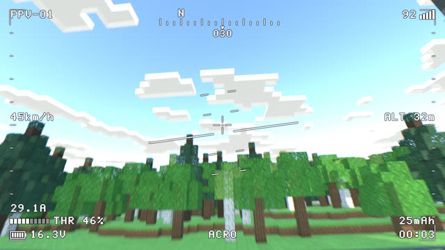
01Clean Digital FPV
Barely touched digital feed, light grain, slight wide-angle lens.
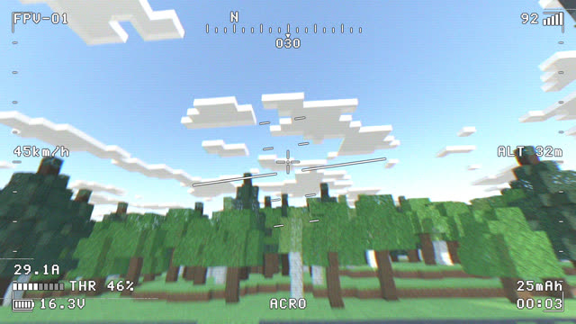
02Mild Analog Warmup
Gentle wobble, rare tears, colour bleed, soft image, faint scanlines.
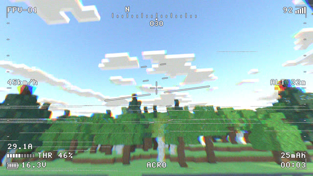
03Unstable Signal
Weak link: strong wobble, frequent tearing, jitter, glitches and dropouts.
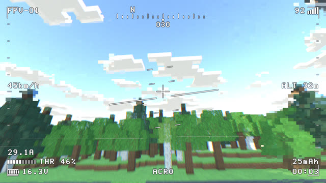
04Uneven Digital Pixels
A digital link breaking into uneven blocks.
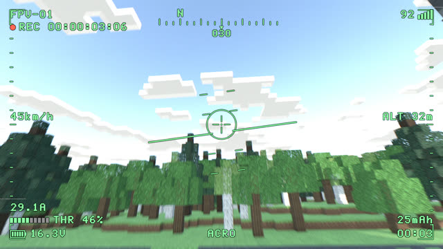
05Tactical Telemetry
Calm, desaturated picture with fine scanlines.
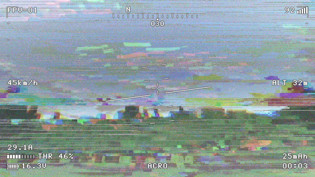
06Severe Recording Failure
Everything failing at once.
| Effect | What it does | Section |
|---|---|---|
| Stepped Jitter | The picture jumps in held steps, with occasional bigger glitches. | Signal FX |
| Horizontal Tearing | Uneven bands slide sideways, sometimes a big tear event. | Signal FX |
| Signal Wobble | Smooth sideways waviness, like an unstable sync signal. | Signal FX |
| Uneven Pixelation | Blocky patches with separate block width and height; Screen or Source order. | Image Quality |
| RGB Channel Split | Colour fringes, radial towards the edges, driven by tearing and wobble. | Image Quality |
| Softness / Sharpen | Recorder blur and edge sharpening. | Recording |
| Colour Bleed | Colour smears sideways. | Recording |
| Tone / Contrast | Contrast, black lift, white level, saturation. | Recording |
| Brightness Flicker | Flicker, stepped flicker and a rolling bar. | Recording |
| Line Dropouts | Broken lines, more where the picture tears, with sparkle. | Recording |
| Luma / Chroma Noise | Grain in brightness and colour, stronger in shadows. | Recording |
| Scanlines | Visible, optionally scrolling lines. | Recording |
| Lens Distortion & Overscan | Barrel or pincushion with automatic fit. Not scaled by Intensity. | Advanced |
Telemetry OSD
21 elements built in Geometry Nodes. Pick a layout to start from, then edit any element in Telemetry HUD › Element.
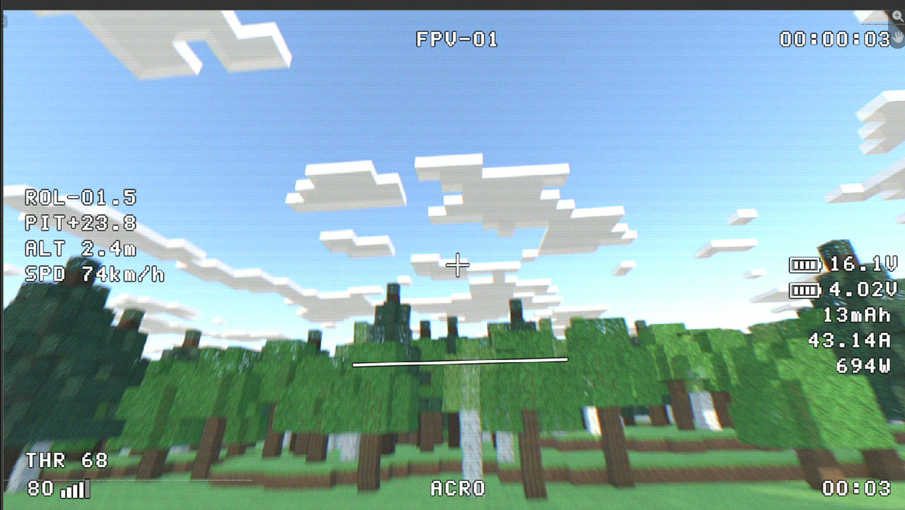
| Layout | Contents |
|---|---|
| Default | Standard OSD with frame brackets and heading tape. |
| Betaflight OSD | White pixel text with outline: attitude, altitude and speed on the left, battery and power on the right, throttle and RSSI bottom left. |
| Tactical Green | Green OSD with REC timecode, range ring and dense scales. |
| Clean Mono | Smooth font with a drop shadow. |
| Mode | Effect on the OSD |
|---|---|
| Crisp | Clean OSD on top of the picture (default). |
| Shared | The OSD tears and wobbles with the picture, like an analog OSD. |
| Hybrid | Partly shared, set by Distortion. |
| Artifacts | Shared / Hybrid only: how much blur, noise and scanlines reach the OSD. |
| Element | Shows |
|---|---|
| Battery / Cell Voltage | Battery icon with pack or average cell voltage. Volt is your take-off voltage. |
| Throttle | Throttle bar and value. |
| Current / Power / Consumed | Amps, watts and mAh used. |
| Timer / Recorder | Flight time; REC dot and timecode. |
| Flight Mode / Callsign | Text you type (ACRO, your craft name…). |
| Signal | RSSI bars and value. |
| Altitude / Speed | Readouts with your own format. |
| Roll / Pitch / Horizon | Attitude readouts, artificial horizon and pitch ladder. |
| Heading | Compass tape. |
| Crosshair / Frame | Centre cross; corner brackets and edge scales. |
| Battery / Signal Warning | LOW BATTERY below 3.5 V per cell; LOW SIGNAL when RSSI drops. |
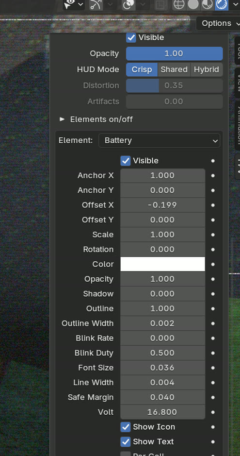
Every element has Visible, Anchor X/Y, Offset, Scale, Rotation, Color, Opacity, Outline, Shadow, Blink, Font Size, Line Width and Safe Margin. Format strings use Python syntax, for example {v:.1f}V → 16.8V or ALT {v:.1f}m.
Flight data: three ways
The OSD numbers (altitude, speed, voltage, amps, throttle, flight time, mAh, RSSI, heading, roll, pitch) can come from your camera, from your own keyframes, or from a simulation.
A. Bake from your camera (recommended)
- Animate the camera like a drone: keyframes, a path or motion tracking.
- Set Battery › Volt, and Top Speed if your scene isn't at real scale.
- Press Flight Data › Bake Flight from Camera, set Signal Range (about 300–500 m for analog) and press OK.
| Value | Comes from |
|---|---|
| ALT | Height above the first-frame position. |
| SPD | The camera's real speed, or scaled to Top Speed. |
| ROL / PIT | The camera's real tilt; the horizon lies on the real horizon. |
| THR | The thrust a quad needs for that motion; 0 % on the ground. |
| V / A / mAh | Voltage starts at your Volt, sags under throttle and drops as the pack drains. |
| RSSI | Drops with distance and when geometry hides the drone. |
Options: Terrain Blocks Signal (walls and hills weaken the signal) and Signal-Driven Look. Change the camera and bake again; the trash icon clears the bake.
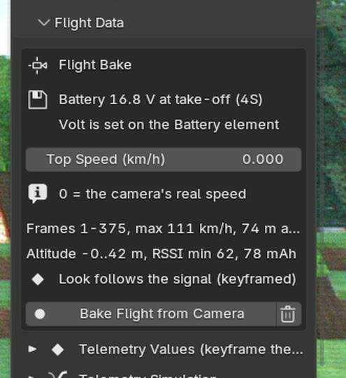
B. Your own numbers
Open Telemetry Values, tick a value (for example Altitude), type a number, hover and press I to keyframe it. Keys win over typed values. Untick to hand the value back to the simulation. You can mix: bake first, then keyframe one value yourself.
C. Leave it simulated
With nothing ticked, the numbers come from a smooth, repeatable simulation, good for background shots. Tune it in Telemetry Simulation: throttle style, current, RSSI dips, attitude, heading drift, warning thresholds.
| You type in Volt | The OSD treats it as |
|---|---|
| 12.6 | A full 3S pack |
| 16.8 | A full 4S pack |
| 16.0 | A 4S pack flown before (icon about 70 %) |
| 22.2 | 6S at nominal voltage |
| 25.2 | A full 6S pack |
Signal-driven look
With Signal-Driven Look on, the baked RSSI blends four looks as the signal weakens: Clean Digital FPV → Mild Analog Warmup → Unstable Signal → Severe Recording Failure. The blend is keyframed every 5 frames, so the picture degrades and recovers smoothly.
Rendering
- Video: Source & Output › Use MP4 sets H.264 at high quality, then Render Animation (or Ctrl+F12). If the output path is still Blender's default
/tmp/and the file is saved, frames go to arenderfolder next to the .blend. For long renders a PNG sequence is safer. - Quick tests: lower Preview Scale; the look stays the same.
- GPU compositing (Advanced) is much faster than CPU.
- View transform: keep Standard so footage keeps its colours. Build sets it; Remove puts the old one back.
- Without the add-on: saved files render on machines that don't have it installed. After changing resolution or fps, press Sync HUD (Advanced) before saving.
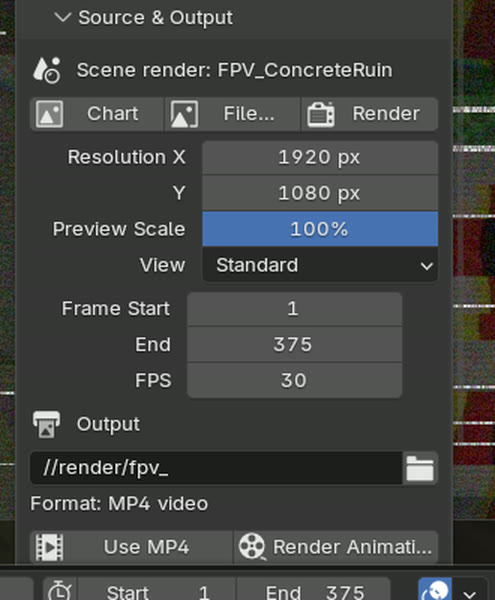
Presets
- Save: type a name and press Save. Saving an existing name updates it. Built-in names and empty names are refused.
- Save to Custom Slot stores the look as Custom User Preset.
- Reset to Default puts every effect, control and OSD element back (Preview Scale is kept).
- Presets are JSON files in the add-on's presets folder (folder button in Presets). Copy them to share looks.
- They store the look, OSD element settings including Volt, Top Speed and font. They don't store keyframes.
- A damaged preset file is reported and leaves your look unchanged.
Recipes
Make real footage analog
Build › File… (Match Resolution on) › Mild Analog Warmup › Betaflight OSD. Keyframe the numbers or leave them simulated.
3D scene, animated camera
Build › Render › set Volt › Bake Flight from Camera with Signal-Driven Look › Betaflight OSD › render.
Digital feed
Clean Digital FPV or Uneven Digital Pixels, font Clean Mono, mode Crisp.
Analog OSD that breaks up
Mode Shared, or Hybrid with Distortion 0.3; HUD Artifacts 0.2–0.5.
Green tactical screen
Preset Tactical Telemetry with layout Tactical Green.
Low battery moment
Type a low Volt (14.4 for a tired 4S) or keyframe Voltage down: the warning blinks below 3.5 V per cell.
Troubleshooting
| Symptom | Fix |
|---|---|
| No FPV tab in the Compositor | Switch the node editor to the Compositor tree. |
| Only "Build FPV Toolkit" shows | This scene isn't set up yet; press it. |
| Colours washed out with effects at 0 | Source & Output › View Transform Standard. |
| "FPV is set up in scene …" | Press Move Setup Here, or switch to that scene. |
| My own compositor is gone | It's kept. Advanced › Remove FPV From Scene restores it. |
| OSD missing in the render | Turn Visible on and Opacity up; press Update / Repair This File. |
| OSD blurry or torn | Mode Crisp, or Artifacts 0. |
| A number ignores what I type | It's keyframed (keys win) or its box in Telemetry Values is unticked. |
| Bake button greyed out | Add a scene camera; press Build. |
| Speed far too high or low | Scene isn't at real scale: set Top Speed. |
| Picture stopped changing with distance | A preset was applied after baking; bake again. |
| Signal drops at the very start | The camera starts inside geometry; start above ground or untick Terrain Blocks Signal. |
| Red box "parts are out of date or missing" | Press Update / Repair This File; values are kept. |
| Footage looks cropped | Different shape footage is cropped to fill; use Match Resolution. |
Known limits and support
- Tested on Blender 5.2.2 LTS, Windows 11, with EEVEE and Workbench scenes and CPU and GPU compositing. macOS, Linux, Blender 5.3+ and Cycles renders haven't been tested yet.
- One FPV setup per .blend file.
- Master sliders (Intensity, category sliders, Speed, Seed) can't be keyframed for the render. Keyframe the effect settings instead, or use the signal-driven look.
- Flight Mode text can't be animated (Blender can't keyframe text): swap two elements with their Visible boxes.
- OSD fonts: Pixel OSD or Clean Mono only.
- Blackbox / SRT flight logs can't be imported directly; key values from Python.
Questions, bugs or a feature request? Contact LarkLab through Superhive. Include your Blender version, operating system and, if you can, the .blend.
superhivemarket.com/creators/larklab
import bpy bpy.ops.fpv.build() bpy.ops.fpv.apply_preset(name="Unstable Signal") bpy.ops.fpv.apply_hud_layout(name="Betaflight OSD") bpy.ops.fpv.bake_flight(signal_range=400) bpy.context.scene.fpv.master_intensity = 0.7